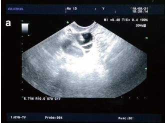
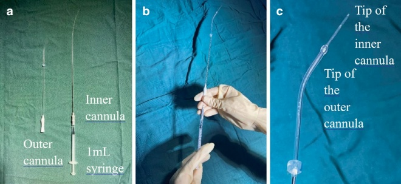
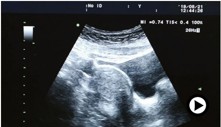
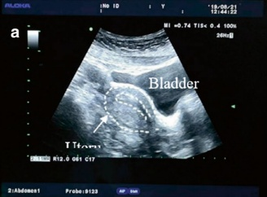
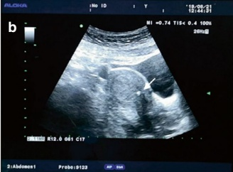
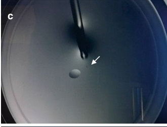
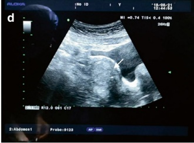
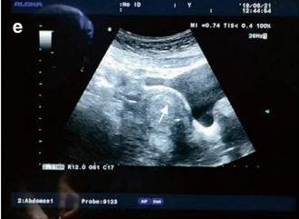

4.3.3 Transabdominal Ultrasound-Guided Embryo Transfer
Intrauterine embryo transfer is the process of placing in vitro-cultured embryos into the uterine cavity. It is the final and crucial step of the IVF procedure. Fresh embryo transfer is typically performed two to five days after egg retrieval. For frozen and resuscitated embryos from natural cycles, the transfer is usually performed three to five days after the LH peak, while the transfer of frozen and resuscitated embryos from artificial cycles typically occurs four to six days after hCG administration.



Transabdominal ultrasound-guided embryo transfer enables the operator to monitor the inclination of the uterus, facilitating the placement of the outer cannula of the transfer catheter along the cervical canal. This approach helps avoid bleeding caused by over-insertion of the outer cannula, which could damage the endometrium, while also ensuring the precise positioning of the tip of the inner transfer catheter.
1. Preoperative preparation for embryo transfer
(a) For patients with a history of difficult embryo transfers or anticipated challenges (e.g., prior cervical conization, cervical adhesions, failed intrauterine catheterization during hysterosalpingography, overly inverted uterus, or reproductive tract malformations), a trial transfer may be performed a few days or up to one or two months before the actual procedure. The trial transfer allows the operator to assess the path of the outer cannula of the transfer catheter into the uterine cavity, which helps minimize the number of attempts during the actual embryo transfer, reduces the need for additional instruments (e.g., cervical forceps or probes), shortens the procedure time, and decreases the risk of uterine contractions and bleeding $ ^{[37]} $.
(b) One week before the embryo transfer, the patient's vaginal discharge should be tested for potential infections.
(c) The following equipment and instruments should be prepared: ultrasound machine, abdominal ultrasound probe, coupling agent, outer and inner cannulas of the transfer catheter, and 1 mL syringes.
(d) The patient does not need to empty her bladder before the embryo transfer.
- Embryo transfer procedure
(a) The patient is placed in the lithotomy position, and a sterile drape is applied.
(b) A speculum is inserted into the vagina to expose the cervix. The cervix is then wiped with cotton balls soaked in saline, and excess fluid is absorbed from the vagina with dry cotton balls. The mucus from the cervical canal is removed using cotton swabs dipped in a culture medium or saline to prevent it from obstructing the tip of the transfer catheter, which could cause the embryo to be retained in the catheter or expelled with the mucus during catheter withdrawal. Care should be taken to operate gently and avoid unnecessary pulling of the cervix to ensure the transfer process is as non-invasive and painless as possible.
(c) Adjust the curvature of the transfer catheter's outer cannula according to the shape of the cervical canal and uterine cavity, as observed via transabdominal ultrasound. Gently insert the outer cannula into the cervical canal, positioning it just above the internal os to minimize irritation to the endometrium.
(d) Insert the inner cannula, which contains the embryo and is connected to a 1 mL syringe, into the outer cannula of the transfer catheter. Slowly advance the inner cannula into the uterine cavity, positioning its tip at the target site in the mid-uterine cavity or at the best spot on the endometrium. Gently inject the embryo into the uterine cavity. According to the 2018 ASRM guidelines, the tip of the embryo transfer catheter should be placed in the
mid-uterine cavity, at least 1 cm from the uterine fundus. However, the placement should be individually assessed, and the fundus should be avoided during embryo transfer (Figs. 4.16 and 4.17).
(e) Slowly withdraw the transfer catheter while keeping the syringe in place to prevent the embryo from being aspirated back into the catheter, which could result in embryo retention. The practice of retaining the transfer catheter in the uterine cavity for a few seconds before withdrawal is controversial. However, studies have shown no statistically significant difference in pregnancy outcomes with or without this retention [37].
(f) Examine the transfer catheter under a microscope to check for retained embryos.
(g) Withdraw the speculum. The procedure is now complete. The patient can be moved from the operating room to the observation room, where she should rest for 15 to 30 min before being discharged from the clinic (Fig. 4.18).






